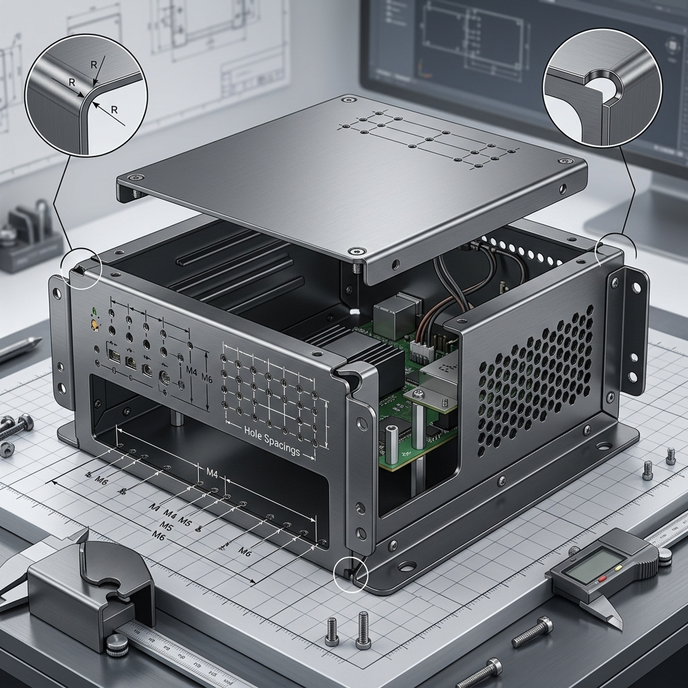

Sheet metal DFM is about designing parts that can be formed cleanly, repeatably, and without unnecessary tooling complications. The goal is to ensure the part can be cut, bent, and assembled using standard shop methods while keeping costs and distortion under control.

Why Sheet Metal DFM Matters
Sheet metal parts are often chosen for their efficiency, lightweight design, and scalability. But those advantages disappear quickly if the design includes difficult bends, cramped features, or unnecessary forming steps. A design that ignores tooling limits usually becomes slower to produce and more expensive.
Good sheet metal DFM reduces trial-and-error in fabrication and improves part consistency, regardless of batch size.
Choose the Right Tooling
The first DFM decision is matching the design to the forming method. A press brake is usually better for low-volume work because the tooling cost is lower and the setup is faster. A progressive die is better suited to high-volume production because it can produce parts quickly and consistently, though the tooling cost is much higher.
The wrong tooling choice can make a simple part unnecessarily expensive. So the design should support the intended production volume from the beginning.
Design for Foldability
A sheet-metal part must be able to bend with standard tools. If the geometry requires internal flanges, inaccessible bends, or unusual forming sequences, the design should be reconsidered. Features that seem minor in CAD can become impossible or costly in the shop.
The safest approach is to keep the bend strategy simple and practical. Every extra bend increases risk, especially if the part must be formed with tight tolerances.
Control Bend and Feature Spacing
Spacing matters in sheet metal because closely placed features can interfere with bending and may distort during forming. Holes, slots, edges, and bends need enough separation to avoid deformation and cracking.
As a rule, the more compact the geometry, the more likely the part is to require special handling. When possible, place features far enough from bend lines to preserve formability and dimensional stability.
Reduce Unnecessary Complexity
Every sheet-metal part should be checked for features that add cost without value. Extra bends, complicated cutouts, and poorly placed holes often increase setup time and scrap risk. If two simpler parts can perform the same job, the simpler solution is usually the better DFM choice.
This is especially important when the part is part of a larger assembly. A small simplification in a single bracket or enclosure can significantly reduce the total fabrication effort.
Material and Thickness Considerations
Material choice affects how well the part bends and how much springback it will have after forming. Thicker or harder materials often require more force and are less forgiving during bending operations. That means the design should account for the selected material early, not after the drawing is already finished.
Thickness should also be kept consistent where possible. Large variations in sheet geometry can complicate forming and make the part harder to control.
Practical DFM Checklist for Sheet Metal
- Are bends feasible with standard shop tools?
- Are holes and slots placed far enough from bend lines?
- Is the material suitable for the bend radius?
- Can the part be made without a special setup?
- Are there features that can be simplified?
- Does the design match the intended production volume?
These checks help avoid fabrication issues before the first part is made.